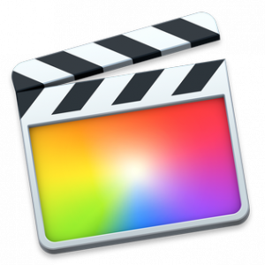
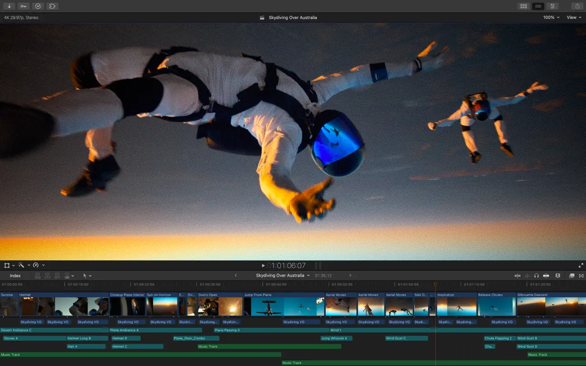

============================

Stats
Title: Final Cut Pro v10.6.5 Patched (macOS) - [haxNode]
Category: Apps
Type: Mac
Language: English
Total size: 3.2 GB
Uploaded By: haxNode
============================
Info:
!!! Remember I don't own or edit anything on links that might be on this torrent!!!

Final Cut Pro Overview
Redesigned from the ground up, Final Cut Pro combines revolutionary video editing with powerful media organization and incredible performance to let you create at the speed of thought. Final Cut Pro debuts a powerful collection of new features for professional editors. A strikingly low-profile interface maximizes work space on any display.
The new Magnetic Timeline 2 advances even further beyond traditional, track-based editing with automatic color coding and flexible layouts based on roles. The latest Final Cut Pro release also takes full advantage of the new MacBook Pro with support for the Touch Bar and wide color workflows.
Key Features of Final Cut Pro
Revolutionary Video Editing
The Magnetic Timeline uses advanced metadata and Clip Connections for faster, easier editing
Enhanced Timeline Index lets you drag and drop audio roles to rearrange the layout of your timeline
Powerful drag-and-drop Object Tracker automatically matches titles and effects to the movement of faces or objects
Change focus points or the depth effect effect for video shot in Cinematic mode on iPhone 13 (requires macOS Monterey)
Edit multicamera projects with automatic syncing and support for up to 64 camera angles
Automatically transform projects for square or vertical delivery with Smart Conform
Import and edit 360° equirectangular video in a wide range of formats and frame sizes
Create, edit, and deliver closed captions from within Final Cut Pro
Extend the capabilities of Final Cut Pro with third-party workflow extensions
Powerful Media Organization
Organize your work within libraries for efficient media management and collaboration
Create proxy copies of your media for portability and performance
Apply custom keywords or favorites on the fly as you select clip ranges
Smart Collections dynamically organize content for you to quickly find any shot in a few clicks
Locate duplicate media in the timeline using highlighted clip ranges or the Timeline Index
Incredible Performance
Improved speed and efficiency on Mac computers with Apple silicon
Unrivaled performance with optimizations for the M1 Pro, M1 Max and M1 Ultra chips on the new Mac Studio and MacBook Pro
Work with a broad range of formats including ProRes, RED, XAVC, AVCHD, Avid DNxHR®, Avid DNxHD®, H.264, HEVC, and more
Compelling, Customizable Effects
Beautifully animated, easily customizable 2D and 3D titles
Change the look of titles, transitions, and effects using intuitive controls
Choose from an ecosystem of third-party FxPlug plug-ins with custom interfaces
Integrated Audio Editing
Assign roles during import to easily track and organize your project
Expand and edit multichannel audio files directly in the timeline
Apply intuitive Logic-based effects and reduce background noise to isolate voices
Sync video with separate audio in a single step with instant audio waveform matching
Intuitive Color Grading
Import, edit, and deliver video in standard color spaces, or in Rec. 2020 and HLG color spaces
Powerful color wheels and curves for precise adjustments with keying and masks
Accurately view HDR on the MacBook Pro and Pro Display XDR
One-Step, Optimized Output
Incredibly fast export for playback on Apple devices and upload to websites such as Vimeo and YouTube
Export audio stems and multiple versions of a finished video using roles metadata
Import and export XML for third-party workflows like color grading and sound mixing
Final Cut Pro Screenshots

============================
Stats
Title: Final Cut Pro v10.6.5 Patched (macOS) - [haxNode]
Category: Apps
Type: Mac
Language: English
Total size: 3.2 GB
Uploaded By: haxNode
============================
Info:
!!! Remember I don't own or edit anything on links that might be on this torrent!!!

Final Cut Pro Overview Redesigned from the ground up, Final Cut Pro combines revolutionary video editing with powerful media organization and incredible performance to let you create at the speed of thought. Final Cut Pro debuts a powerful collection of new features for professional editors. A strikingly low-profile interface maximizes work space on any display. The new Magnetic Timeline 2 advances even further beyond traditional, track-based editing with automatic color coding and flexible layouts based on roles. The latest Final Cut Pro release also takes full advantage of the new MacBook Pro with support for the Touch Bar and wide color workflows. Key Features of Final Cut Pro Revolutionary Video Editing The Magnetic Timeline uses advanced metadata and Clip Connections for faster, easier editing Enhanced Timeline Index lets you drag and drop audio roles to rearrange the layout of your timeline Powerful drag-and-drop Object Tracker automatically matches titles and effects to the movement of faces or objects Change focus points or the depth effect effect for video shot in Cinematic mode on iPhone 13 (requires macOS Monterey) Edit multicamera projects with automatic syncing and support for up to 64 camera angles Automatically transform projects for square or vertical delivery with Smart Conform Import and edit 360° equirectangular video in a wide range of formats and frame sizes Create, edit, and deliver closed captions from within Final Cut Pro Extend the capabilities of Final Cut Pro with third-party workflow extensions Powerful Media Organization Organize your work within libraries for efficient media management and collaboration Create proxy copies of your media for portability and performance Apply custom keywords or favorites on the fly as you select clip ranges Smart Collections dynamically organize content for you to quickly find any shot in a few clicks Locate duplicate media in the timeline using highlighted clip ranges or the Timeline Index Incredible Performance Improved speed and efficiency on Mac computers with Apple silicon Unrivaled performance with optimizations for the M1 Pro, M1 Max and M1 Ultra chips on the new Mac Studio and MacBook Pro Work with a broad range of formats including ProRes, RED, XAVC, AVCHD, Avid DNxHR®, Avid DNxHD®, H.264, HEVC, and more Compelling, Customizable Effects Beautifully animated, easily customizable 2D and 3D titles Change the look of titles, transitions, and effects using intuitive controls Choose from an ecosystem of third-party FxPlug plug-ins with custom interfaces Integrated Audio Editing Assign roles during import to easily track and organize your project Expand and edit multichannel audio files directly in the timeline Apply intuitive Logic-based effects and reduce background noise to isolate voices Sync video with separate audio in a single step with instant audio waveform matching Intuitive Color Grading Import, edit, and deliver video in standard color spaces, or in Rec. 2020 and HLG color spaces Powerful color wheels and curves for precise adjustments with keying and masks Accurately view HDR on the MacBook Pro and Pro Display XDR One-Step, Optimized Output Incredibly fast export for playback on Apple devices and upload to websites such as Vimeo and YouTube Export audio stems and multiple versions of a finished video using roles metadata Import and export XML for third-party workflows like color grading and sound mixing Final Cut Pro Screenshots